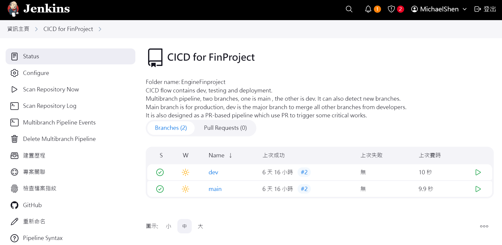
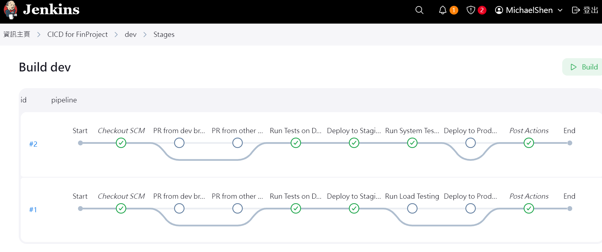

This project fetches Taiwan stock market data, implements stock selection strategies, and integrates a full CI/CD pipeline for development and testing.
Designed and deployed a multibranch pipeline in Jenkins to automate the crawling, strategy execution, and backtesting processes for stock market data.
Ensured seamless integration and deployment by automating testing and validation across multiple branches.
Optimized pipeline execution time, improving development efficiency and reducing deployment risks.
Pipeline


Features
Automated data fetching and preprocessing
Advanced stock selection algorithms
Real-time stock trend analysis
Back testing
Integration with CI/CD pipelines for continuous updates
Streamline the SW engineering flow (dev , test, deploy)